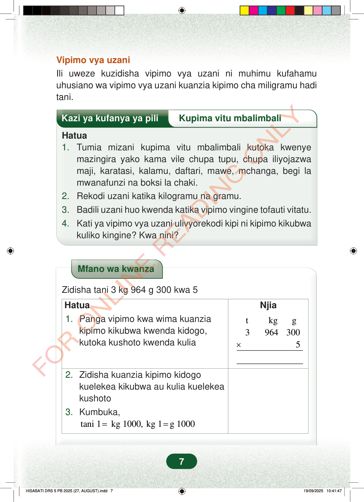

Vipimo vya uzaniIli uweze kuzidisha vipimo vya uzani ni muhimu kufahamuuhusiano wa vipimo vya uzani kuanzia kipimo cha miligramu haditani.Kazi ya kufanya ya piliKupima vitu mbalimbaliHatua1.Tumia mizani kupima vitu mbalimbali kutoka kwenyemazingira yako kama vile chupa tupu, chupa iliyojazwamaji, karatasi, kalamu, daftari, mawe, mchanga, begi lamwanafunzi na boksi la chaki.2.Rekodi uzani katika kilogramu na gramu.3.Badili uzani huo kwenda katika vipimo vingine tofauti vitatu.4.Kati ya vipimo vya uzani ulivyorekodi kipi ni kipimo kikubwakuliko kingine? Kwa nini?Mfano wa kwanzaZidisha tani 3 kg 964 g 300 kwa 5HatuaNjia1.Panga vipimo kwa wima kuanziakipimo kikubwa kwenda kidogo,kutoka kushoto kwenda kuliatkgg39643005×2.Zidisha kuanzia kipimo kidogokuelekea kikubwa au kulia kuelekeakushoto3.Kumbuka,tani 1kg 1000, kg 1g 1000==7
Vipimo vya uzani Ili uweze kuzidisha vipimo vya uzani ni muhimu kufahamu uhusiano wa vipimo vya uzani kuanzia kipimo cha miligramu hadi tani.
Kazi ya kufanya ya pili Kupima vitu mbalimbali
Hatua 1. Tumia mizani kupima vitu mbalimbali kutoka kwenye mazingira yako kama vile chupa tupu, chupa iliyojazwa maji, karatasi, kalamu, daftari, mawe, mchanga, begi la mwanafunzi na boksi la chaki. 2. Rekodi uzani katika kilogramu na gramu. 3. Badili uzani huo kwenda katika vipimo vingine tofauti vitatu. 4. Kati ya vipimo vya uzani ulivyorekodi kipi ni kipimo kikubwa kuliko kingine? Kwa nini?
Mfano wa kwanza
Zidisha tani 3 kg 964 g 300 kwa 5
Hatua
Njia
1. Panga vipimo kwa wima kuanzia kipimo kikubwa kwenda kidogo, kutoka kushoto kwenda kulia
t kg g 3 964 300 5 ×
2. Zidisha kuanzia kipimo kidogo kuelekea kikubwa au kulia kuelekea kushoto 3. Kumbuka, tani 1 kg 1000, kg 1 g 1000 = =
7
Vipimo vya uzaniIli uweze kuzidisha vipimo vya uzani ni muhimu kufahamu uhusiano wa vipimo vya uzani kuanzia kipimo cha miligramu hadi tani.Hatua za kupima vitu mbalimbali kwa mizani: pima vitu vya mazingira, andika uzani kwa kilogramu na gramu, badili kwenye vipimo vingine vitatu, kisha eleza kipimo kikubwa zaidi na kwa nini.Kazi ya kufanya ya piliKupima vitu mbalimbaliHatua1. Tumia mizani kupima vitu mbalimbali kutoka kwenye mazingira yako kama vile chupa tupu, chupa iliyojazwa maji, karatasi, kalamu, daftari, mawe, mchanga, begi la mwanafunzi na boksi la chaki.2. Rekodi uzani katika kilogramu na gramu.3. Badili uzani huo kwenda katika vipimo vingine tofauti vitatu.4. Kati ya vipimo vya uzani ulivyorekodi kipi ni kipimo kikubwa kuliko kingine? Kwa nini?Mfano wa kwanza wa kuzidisha tani 3, kilogramu 964 na gramu 300 kwa 5. Jedwali linaonyesha kupanga t, kg na g, kisha kuanza kuzidisha kutoka gramu kwenda kushoto, ukikumbuka tani 1 ni kilogramu 1000 na kilogramu 1 ni gramu 1000.Mfano wa kwanzaZidisha tani 3 kg 964 g 300 kwa 5HatuaNjia1. Panga vipimo kwa wima kuanzia kipimo kikubwa kwenda kidogo, kutoka kushoto kwenda kuliat kg g3 964 300× 52. Zidisha kuanzia kipimo kidogo kuelekea kikubwa au kulia kuelekea kushoto3. Kumbuka,tani 1 = kg 1000, kg 1 = g 1000